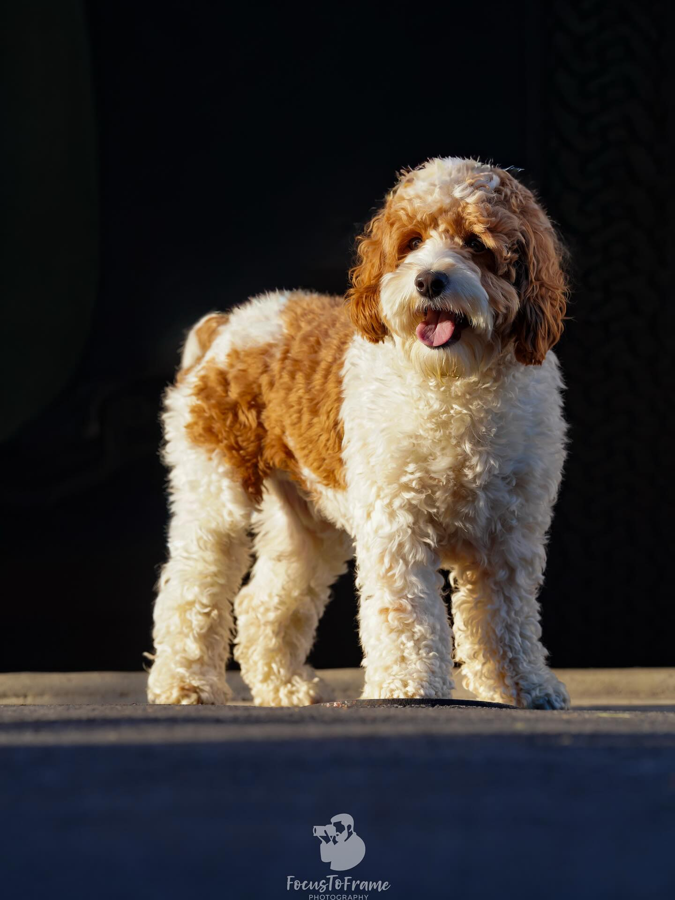
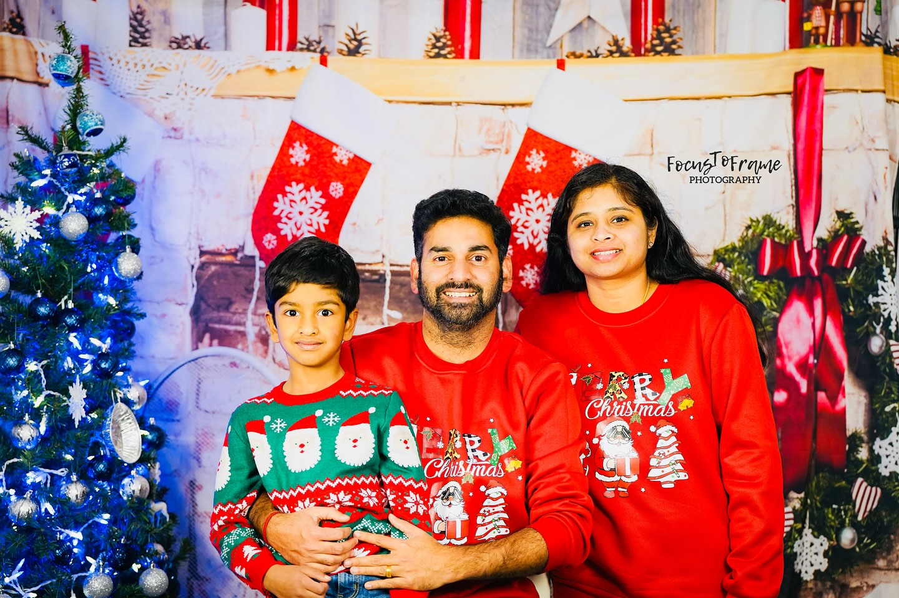
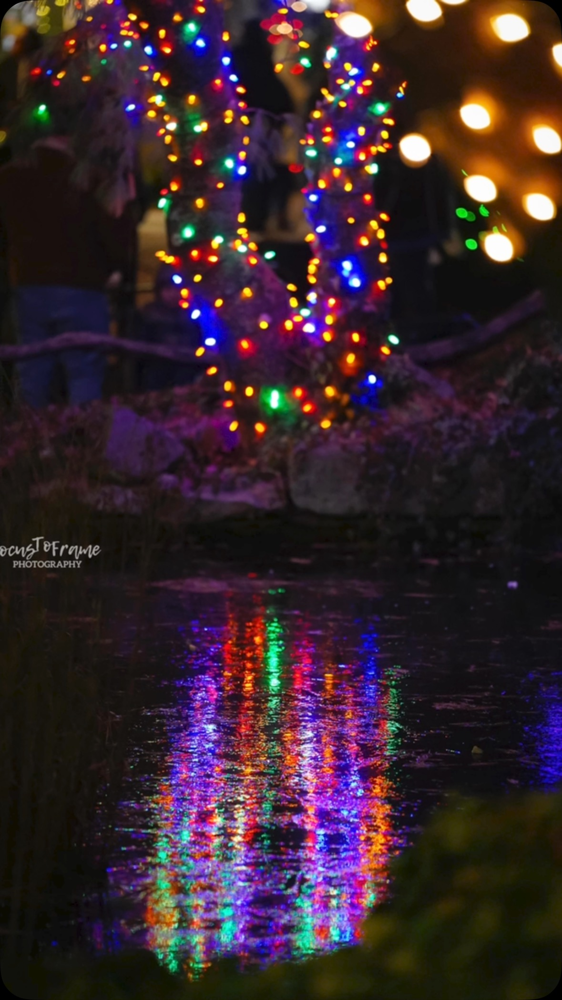
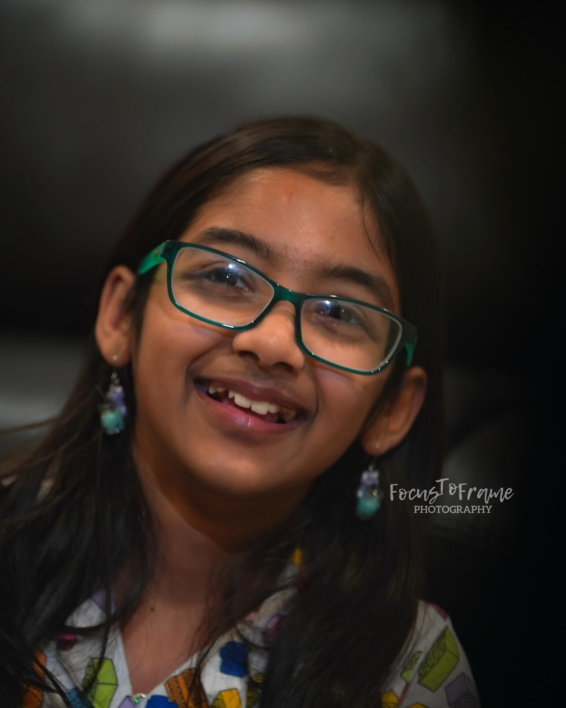

The Photographer

My Story
Welcome to Focus to Frame — a photography space built on a simple belief: every moment deserves to be remembered beautifully. I'm Geethu Nair, a portrait photographer based in Downingtown, Pennsylvania, and photography is my way of slowing down time.
Whether it's the fleeting warmth of an autumn afternoon, the first silent snowfall of winter, or the effortless joy a dog brings to a frame — I approach every shoot with patience, intention, and a genuine love for the craft.
"Photography is the art of frozen time — the ability to store emotion and feelings within a frame."
I specialize in portrait photography, but my lens finds beauty everywhere: in seasons, in pets, in the quiet in-between moments that make life worth living. Every photo I take is a conversation between light, subject, and story.
Work With MeWhat Drives Me
I chase light the way others chase perfect weather. The right light doesn't just illuminate a subject — it reveals its soul. I plan every shoot around the light, whether it's golden hour glow or the soft diffusion of an overcast sky.
I'm not interested in poses that look forced. I want to capture you as you truly are — laughing too hard, lost in thought, full of wonder. The imperfect moments are always the most perfect ones.
A photograph is a promise: this moment existed, this emotion was real, this beauty was here. I take that promise seriously. Every image I deliver is one I'd be proud to hang on my own wall.
The Approach
Every session begins with a conversation. I want to understand what you're looking for — the mood, the setting, the feeling you want to walk away with. From there, I plan the shoot with care, show up fully present, and create images that go beyond what you expected.
We talk about your vision, style, and goals before we ever pick up a camera.
I find settings that complement your story — from golden forests to cozy urban corners.
Relaxed, fun, and always authentic. I guide you through the session so you feel at ease.
Carefully edited, high-resolution images delivered in a private gallery — ready to print and cherish.


